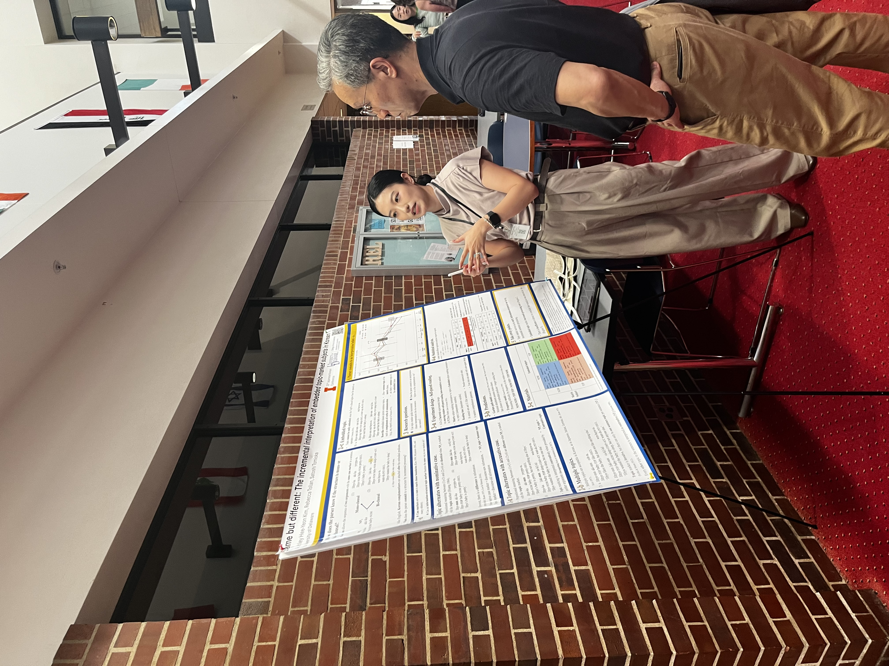
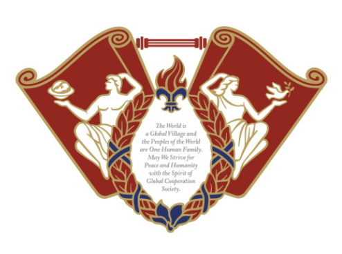
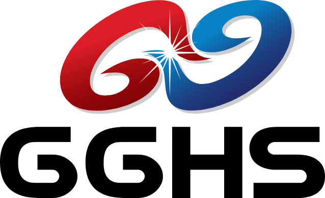
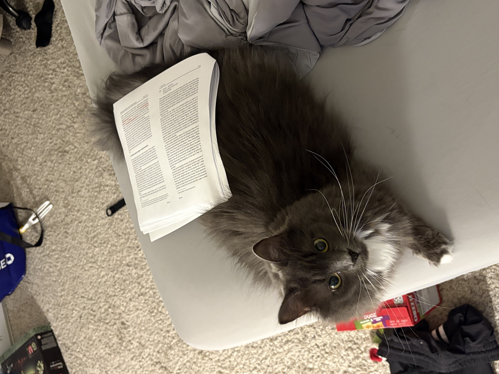
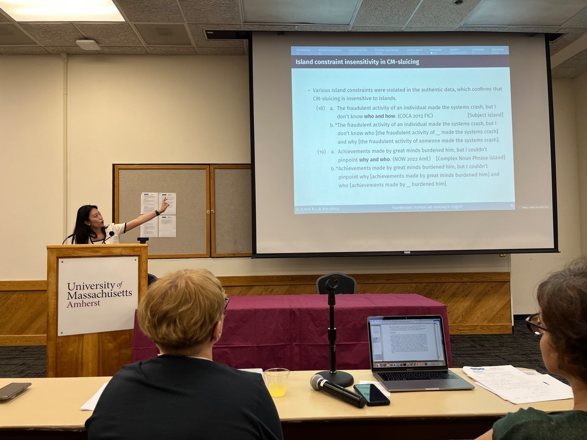
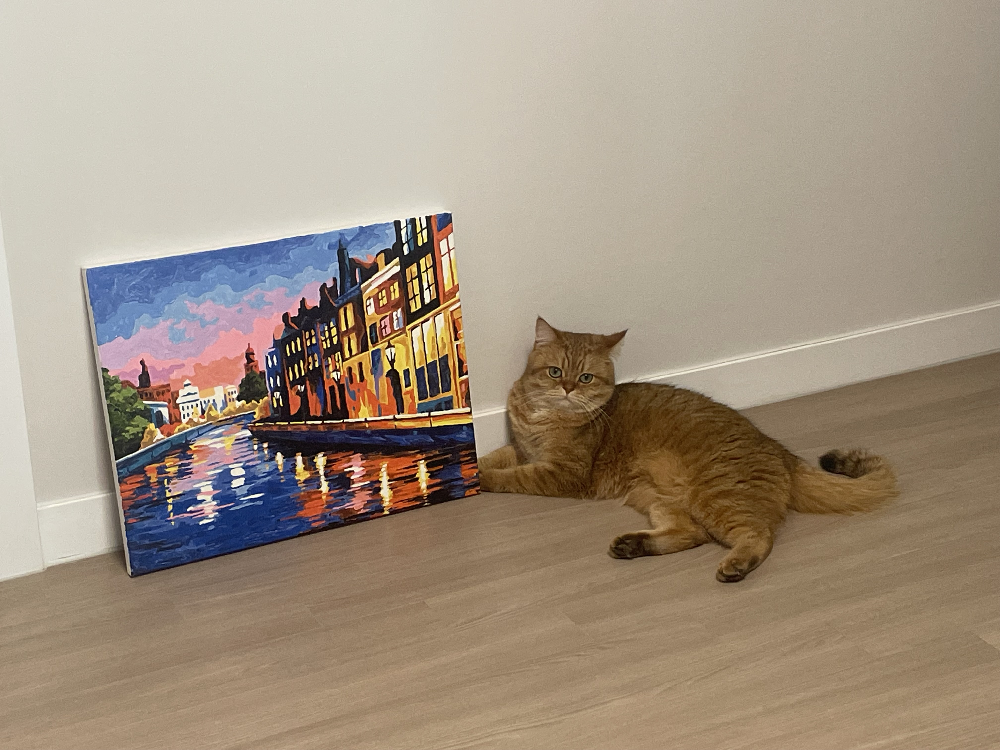
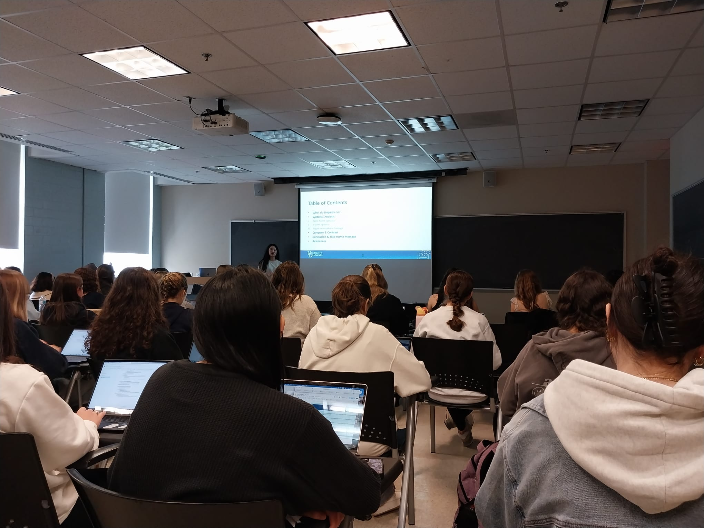

Ashley Hee-Yeon Kim
3rd-year PhD Student in Linguistics and Cognitive Science
University of Delaware
About
I am a PhD student in Linguistics and Cognitive Science at the University of Delaware. I am mostly interested in syntax-morphology interface, with focus on Case marking (psych constructions, topic marking as a clausal boundary marker). I am also working on sociolinguistic (video effects of AI on children acquiring language, facial expression contradiction interpretation by Right Hemisphere Damaged (RHD) patients, along with how the telicity of psych verbs in English is interpreted with students that are native speakers of English vs. international students who take English as their second language) topics with psycholinguistic measures.
I am a bilingual speaker of both Korean and English. Other langauges I am able to speak are Spanish, Italian, German, Brazilian Portuguese, and Esperanto. I hope to work more on diverse fields within Linguistics and Psychology, extending to language preservation.

Contact
Email: heeyeon@udel.edu
Phone: 302-981-1944
Education
University of Delaware
PhD in Linguistics and Cognitive Science — 2024-in progress

Kyung Hee University
Master of Arts, English Linguistics, 2022-2024
Kyung Hee University
Bachelor of Arts, English Language and Literature, 2018-2022

Goyang Global High School
General Educational Development, 2015-2018
Research
Syntax, Morphosyntax, Syntax-Semantics Interface, Corpus Linguistics, Psycholinguistics, Computational Linguistics, EEG/ERP
- Same but different: The incremental interpretation of embedded topic-marked subjects in Korean (advised by. Dr. Satoshi Tomioka & Dr. Rebecca Tollan)
- Subjecthood in Korean psych constructions: Case frames, diagnostics, and a Minimal analysis (advised by. Dr. Benjamin Bruening & Dr. Satoshi Tomioka)
- Sluicing in Korean and Turkish: Case connectivity contrast with English (collaboration with. Dr. Bilge Palaz)
- Brief exposure to AI videos may affect children's language production (advised by. Dr. Roberta M. Golinkoff, with the Child's Play Lab)
- Is the right hemisphere expressive?: An experimental approach (advised by. Dr. Nina Straitman & Dr. Andrea Beltrama)
- Semantic geometry and argument realization in English psychological verbs (advised by. Dr. Kasia Hitczenko)
- 'Fear' vs. 'frighten': Does the telicity matter?
- An Account for Differential Object Marking in World Languages: typological, experimental, computational, syntactic analyses (to be probed for dissertation)
Photos



